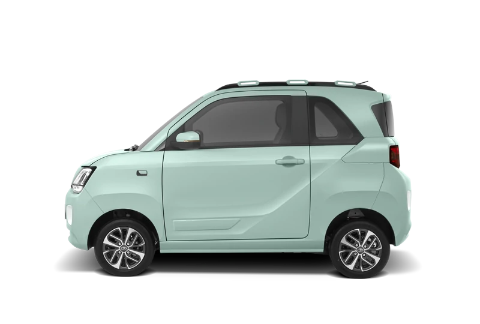

IMAGE TEST · SERES E1

Compact city EV
A live comparison instrument
Search the market, line up variants, then choose any two numeric fields to see the trade-off.

Compact city EV
Pinned comparison
01 · Filter & compare
All 29 source-sheet fields are shown. Use the filter box under any column heading; quick filters and column filters both update the scatter plot below. Numeric filters accept operators such as >=300 or <500000000. Jump to filtered scatter ↓
02 · Explore the result
Only variants with numeric values for both chosen axes are plotted. Click a dot to pin or unpin it in the comparison shelf.
Source & boundaries
Source population is the complete 2026 EV tab for July 2026. Price means OTR Jakarta. “Range” and other specifications retain the source workbook’s definitions; this page does not standardize test cycles or independently validate manufacturer claims.
Open source workbook ↗